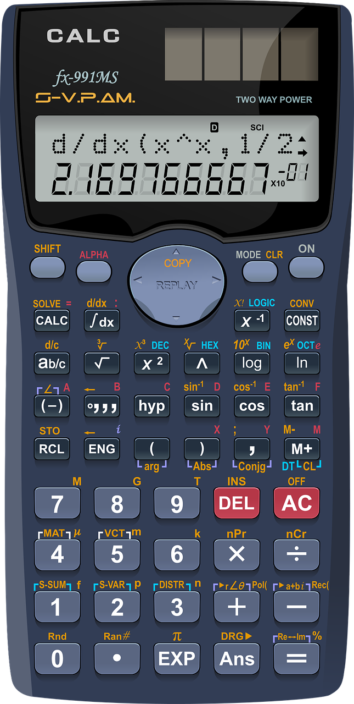
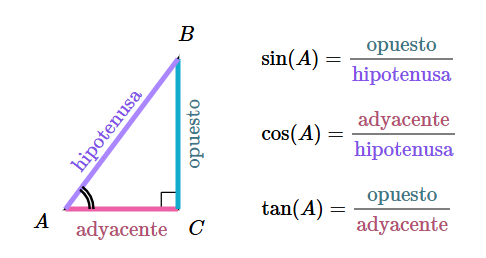
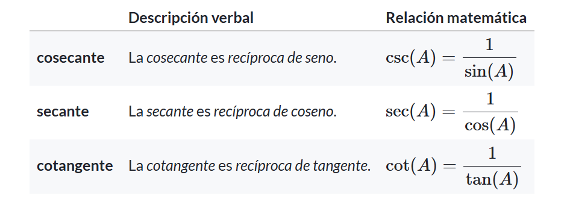
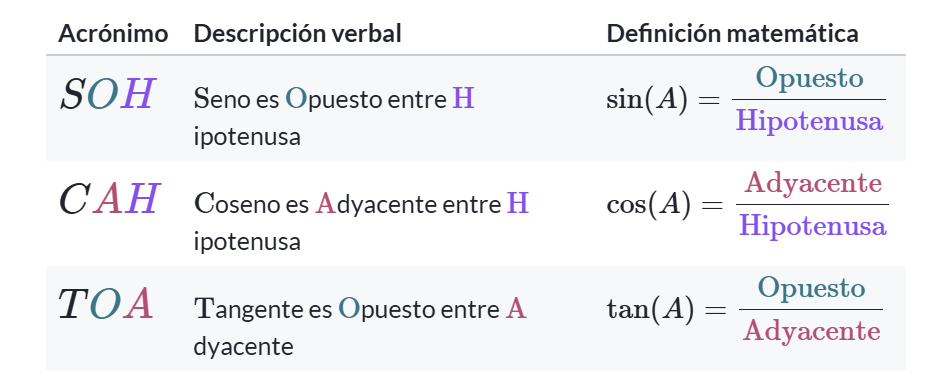

Las relaciones en el Triángulo: Razones Trigonométricas

¿Qué Son y Para Qué Sirven?
Son relaciones entre los lados de un triángulo rectángulo, tomando como referencia uno de sus ángulos agudos. Estas relaciones nos permiten resolver triángulos, calcular distancias, ángulos y mucho más.
Razones trigonométricas Básicas
Las principales y primeras tres son:
Seno(sin) = cateto opuesto / hipotenusa
Coseno(cos) = cateto adyacente / hipotenusa
Tangente(tan) = cateto opuesto / cateto adyacente

Razones trigonométricas Recíprocas
Son funciones que se obtienen invirtiendo las Razones Trigonométricas Básicas.
Se crearon para facilitar ciertos cálculos matemáticos, especialmente cuando las razones básicas resultan en fracciones. Usar sus recíprocas ayuda a simplificar expresiones y resolver problemas de manera más directa, especialmente en trigonometría avanzada, física y matemáticas aplicadas.
Las Razones Recíprocas de las tres ya mencionadas, son:
Secante(sec) = hipotenusa / cateto adyacente
Cosecante(csc) = hipotenusa / cateto opuesto
Cotangente(cot) = cateto adyacente / cateto opuesto

SOHCAHTOA
Es la palabra que nos ayuda a recordar las definiciones de seno, coseno y tangente. He aquí como funciona esto:

Si no entendiste por completo esta teoría y tienes Internet, date una vuelta por este video🤩
Ejemplo Práctico: Encontrar el valor de una Razón Trigonométrica en un Triángulo Rectángulo
De un triángulo rectángulo ΔABC, se tiene la siguiente información:

Hipotenusa=10, Cateto Opuesto=5 y Cateto Adyacente=8. Encontremos el Seno del Ángulo ɑ.
sen(ɑ) = Cateto Opuesto / Hipotenusa Ó 5/10
sen(ɑ) = 0.5
Aquí Tenemos la respuesta de nuestro problema, pero recordemos que esto no es el valor del Ángulo "ɑ", sino el SENO del Ángulo "ɑ"
Así, obtenemos que: El Seno del Ángulo "ɑ" mide 0.5.
Video Explicativo
Antes de que lleguemos al final de la jornada de aprendizaje, échale un ojo a este clip que te enseñará visualmente a realizar un ejercicio básico:
(El video no necesita Internet)